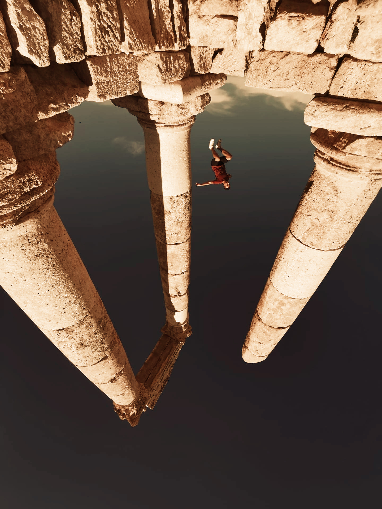
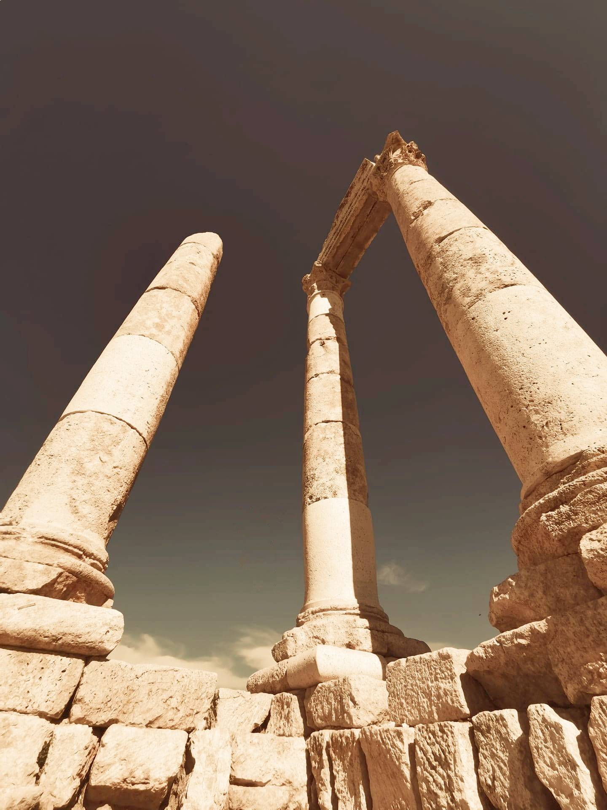
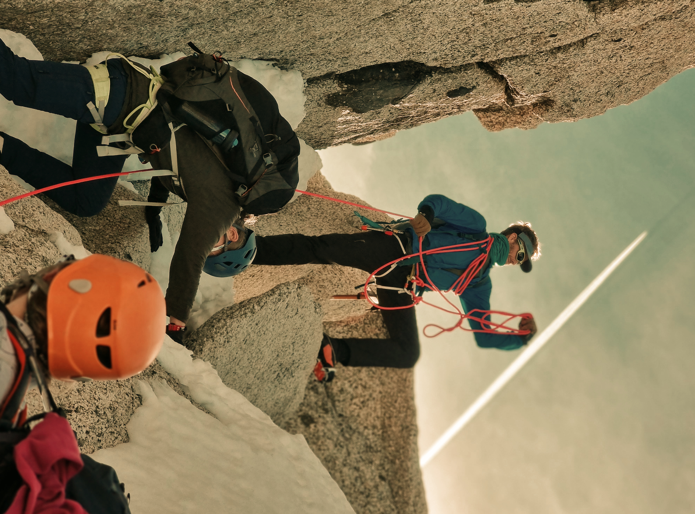
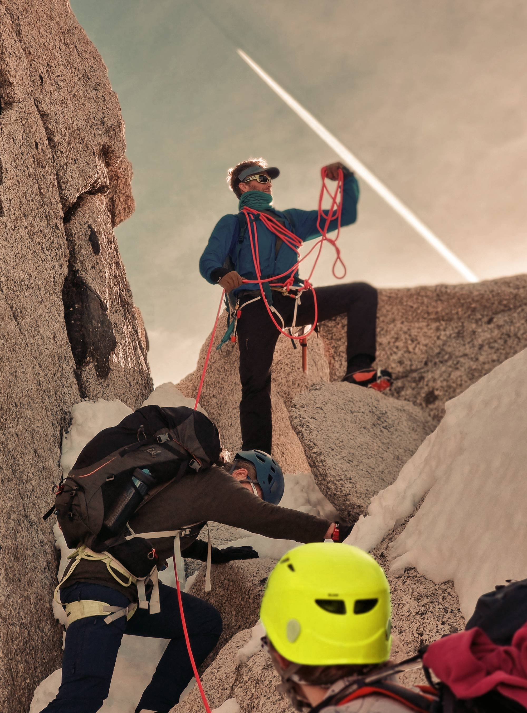
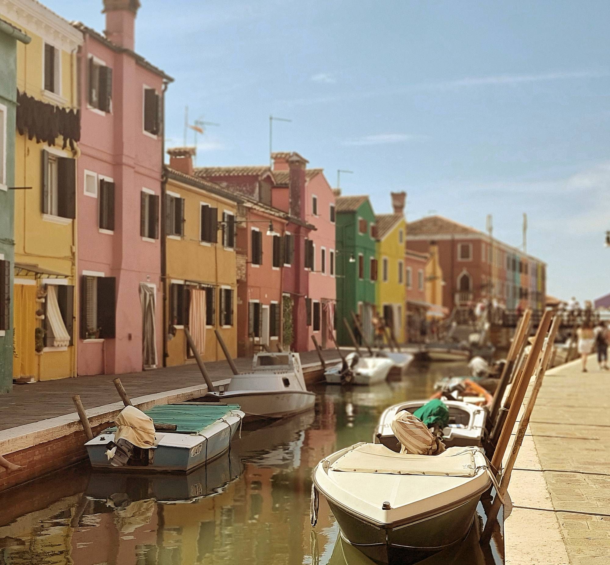

Mina redigerade bilder
Här kan se orginalbilderna jämfört med mina slutgiltiga resultat
Bild 1: Borttaget objekt
Original

Redigerad

Vad jag har gjort: I den här bilden har jag använt mig av Photopea för att ta bort personen i bilden. Jag har även justerat ljuset och färgbalansen.
Bild 2: Färgläggning
Original

Redigerad

Vad jag har gjort: Här valde jag att färglägga hjälmen på personen närmast kameran. Jag markerade det med quick selection verktyet, skapade en mask och ändrade färgen.
Bild 3: Färg- och ljusjustering
Original

Redigerad
![[Färgglada hus längs en kanal med båtar, flygplanet är borttaget och ljus och färgbalans är fixad för att matcha övriga]](images/bildserie001.jpg)
Vad jag har gjort: I bild tre låg fokus på att skruva på nivåerna och kontrasten för att få den att smälta in bra med de andra två.